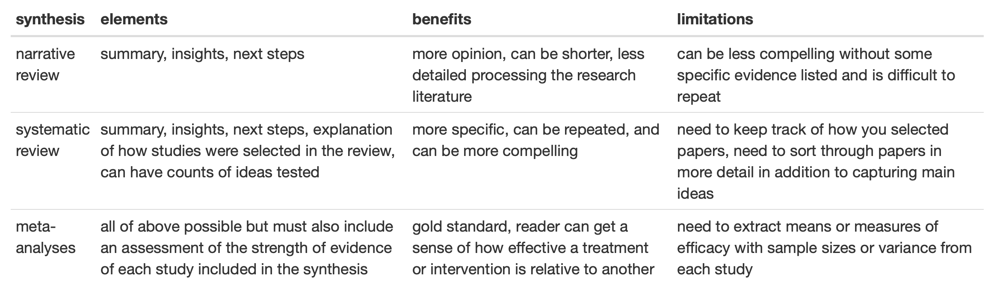

10 Session 10: Quantitative synthesis tools
10.1 Learning outcomes
- Hone your capacity to review scientific literature and scope critical ideas.
- Transform your research expertise into formal scientific evidence.
- Synthesize peer-reviewed science papers.
10.2 Context
To best explore conceptual and mental models for synthesis, a summary of the simple landscape of opportunities and more comprehensive mapping of synthesis and critical big-picture thinking in science is illuminating. Scientific synthesis is big picture science that describe a set of studies on a pinpointed topic (Lortie 2014). There are at least three simple and direct options that are amenable to a capture of the research associated with a scientific challenge that you have identified.
Narrative review as a highlight, short commentary, or new idea paper that is a snapshot of the key findings from a field research summarizing the main discoveries and/or listing the most critical research gaps. Papers like these are often called Insights, Forum, or Ignite.
Systematic reviews are similar to narrative reviews, but clear criteria are listed explaining how you selected papers, i.e. these search terms were used in the Web of Science and only studies that had these key inclusion attributes were used. Systematic are more replicable because others can follow your steps and get the same set of papers and hopefully reach similar conclusions about the corpus of evidence. These reviews also typically provide some simple quantitative data about the set of studies such as number of countries where the research was done, total sample sizes, number of variables examined, or any attributes that describe what the research was for a specific detail. The narrative component is similar to the first option because it can state what we know and what do not but these reviews do so much more precisely. Even a few numbers go a long way to convincing people about the extent that we know or have studied a subject in science. Papers like these are often termed Short Commentary or Mini-Review.
Meta-analyses are systematic reviews plus for each primary study you summarize, you capture the relative efficacy of the treatment tested. Papers like this are often termed Reviews or Meta-analyses but other terms can be used too. Note: in some fields of research the terms ‘systematic review’ and ‘meta-analysis’ are used interchangeably, but in most environmental sciences, meta-analyses always have a measure of the strength of evidence from each studied included in the synthesis whilst systematic reviews typically do not.
So for instance, narrative review might provide insights into vaccine research and report that we have tested three vaccine types but need to test more alternatives. A systematic review would state this too but mention how they checked the science, i.e. we checked 100 papers using these terms x,y, & z in The Web of Science, and it might also state how many people were tested in total across all studies. This is a more powerful synthesis. However, the gold standard would be the meta-analysis that summarizes all of the above but also reports how well each vaccine type tested actually works on average across all the studies.
10.2.1 Summary of options

10.2.2 Evidence framing
A more complex and comprehensive summary of the contemporary landscape of synthesis has been evolving. Framing scientific synthesis activities as an open, comprehensive, and diverse aggregation or summary of many forms of evidence expands our capacity to inform decision making. Contemporary synthesis science has innovated on evidence maps as a tool to show the evidence. This can be done through mapping evidence onto a geographic map to show where we know what we know (McKinnon et al. 2015). Evidence maps can also be less literal and map out knowledge as tabular or bubble plots that focus more on the relative frequencies of what we know about different concepts within a synthesis (Miake-Ley et al. 2016). This approach has also been framed as ‘evidence maps for evidence gaps’ because it can become abundantly clear where evidence is missing in terms of research or ideas (O’Leary et al. 2017). Importantly, decision making has also evolved to more substantially rely on synthesis science to inform strategy (Thomas-Walters et al. 2021). There has also been a drive to thus enable and support more synthesis to build capacity and connect disparate fields of research for more holistic solution sets (Ladouceur and Shackelford 2021).
10.3 Challenge
- Review the literature from your field of research from the perspective of synthesis. Explore whether a simple three-paper typology is relevant or if the field has begun to incorporate and frame knowledge via other inference tools including these or even others. Methods, concepts, semantics, ontologies, etc. any forms of evidence aggregation that advances insight, innovation, and knowledge production.
- Familiarize yourself with the scientific synthesis options that can describe and capture the state-of-the-art research for your specific challenge.
- Select and refine your topic by populating a table with key terms.
- Check Google Scholar and The Web of Science trying these different terms.
- Document the relevant frequency of synthesis studies using these terms. Filter to most cited or the last three years of research only if the evidence is too extensive or if you suspect there is a key temporal bias or change within the field of inquiry.
- Repeat process for primary studies. Contrast the primary study focus with a synthesis focus.
- Do a cursory read of the abstracts of the synthesis studies.
- Identify other terms including synonyms and antonyms that you may have not included.
- Reflect on this challenge and ensure the terms you used and the papers you have are studying the dimension of the challenge you want to summarize.
- Decide if it makes sense to do a short narrative, systematic review, or meta-analysis (at least at this point in time).
10.4 Products
- A clear vision of the challenge you want to tackle.
- A set of ideas, papers, and the outcome that you ultimately are likely to provide.
- The landscape of evidence you need to examine a process or challenge across many studies.
10.6 Reflection questions
- What synthesis studies have most informed or inspired your understanding in your field?
- Is there evidence that is most needed by stakeholders right now that needs to be compiled or derived?
- Was there any indication that the focus of the synthesis studies you retrieved differed from the primary studies?
- Do synthesis studies advance theory or depth of knowledge more rapidly than well-executed primary studies or experiments?